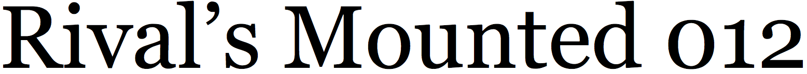
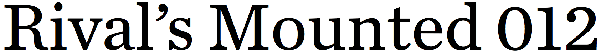

georgia

miller

century supra

harriet

chronicle
One of the most popular foundations for recent text families has been the historical model known as Scotch, from the mid-19th century. One example is Georgia, which was designed primarily to work well on computer screens of the 1990s. But 20 years on, its design compromises are becoming obsolete. Miller, by contrast, shares Georgia’s Scotch influence but with more subtlety and detail. (See system fonts for a closer comparison.) Harriet, Chronicle, and Century Supra—the last is my design—are also based on the Scotch model but add contemporary details and flavor.